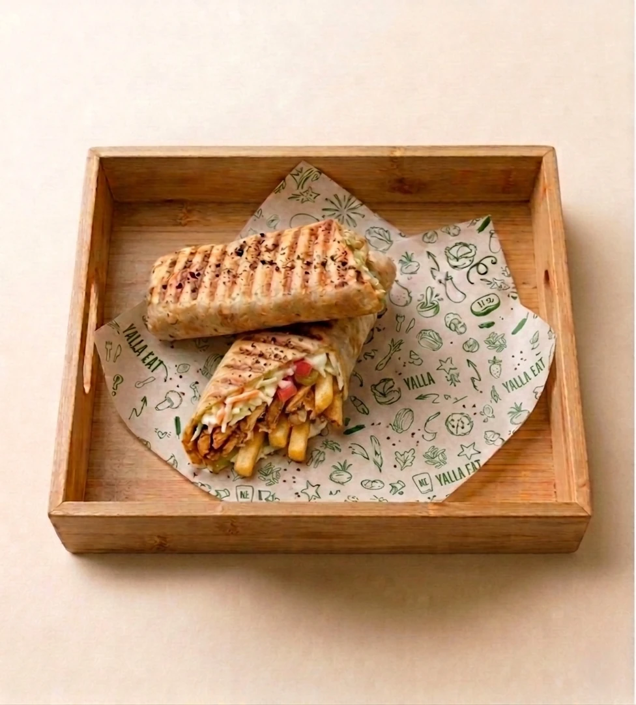
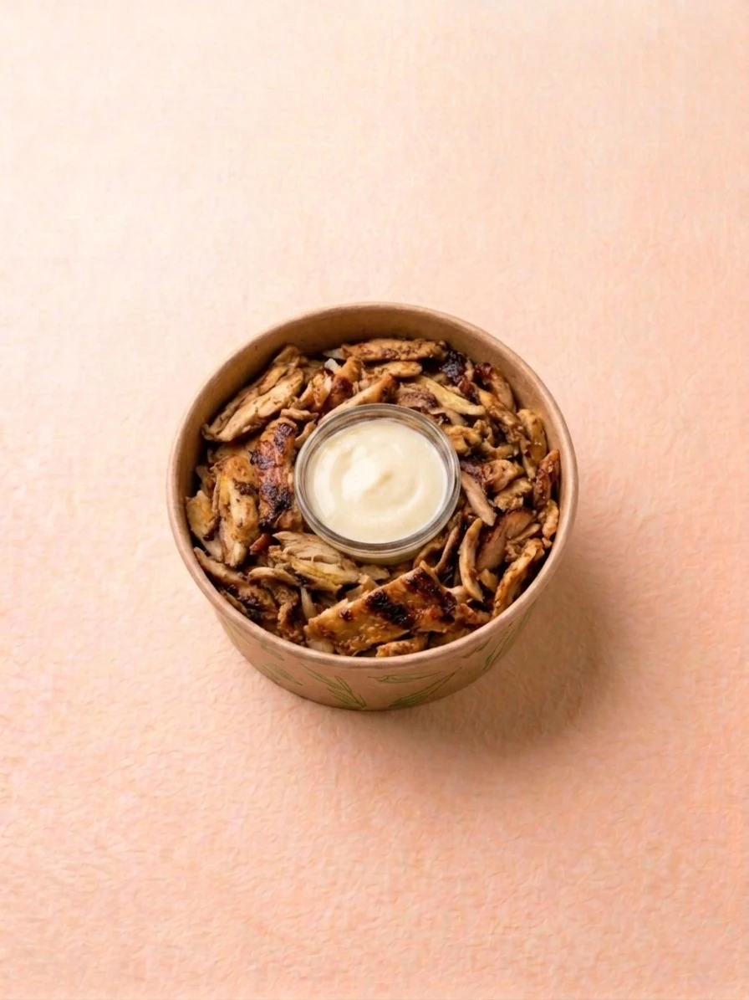
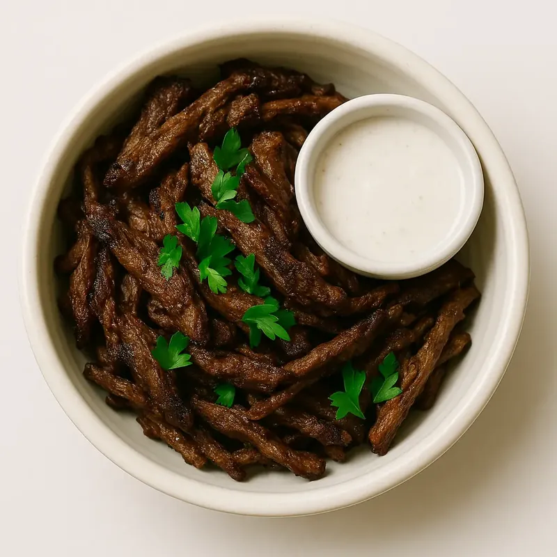
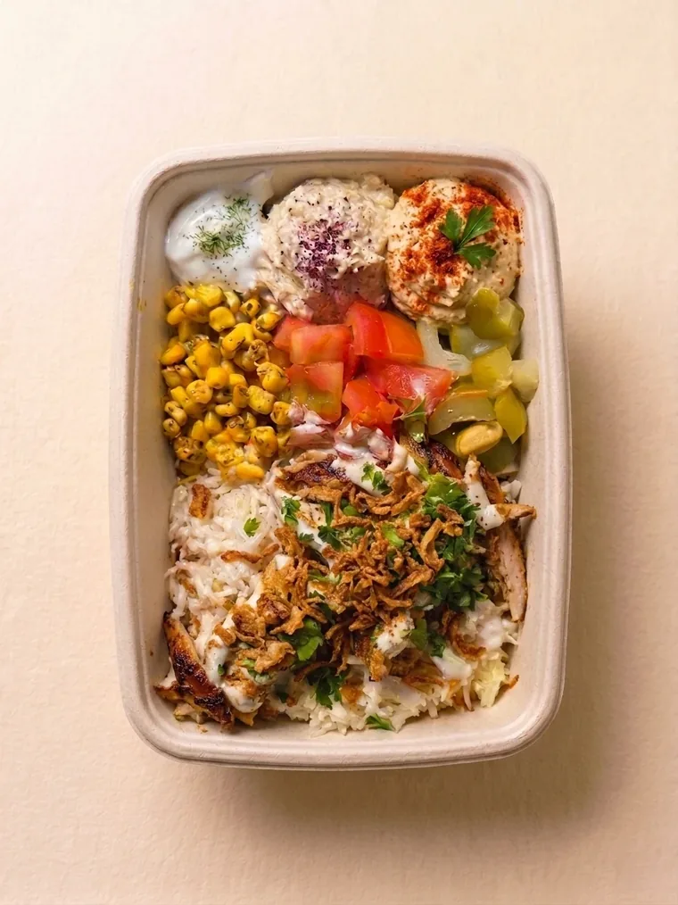
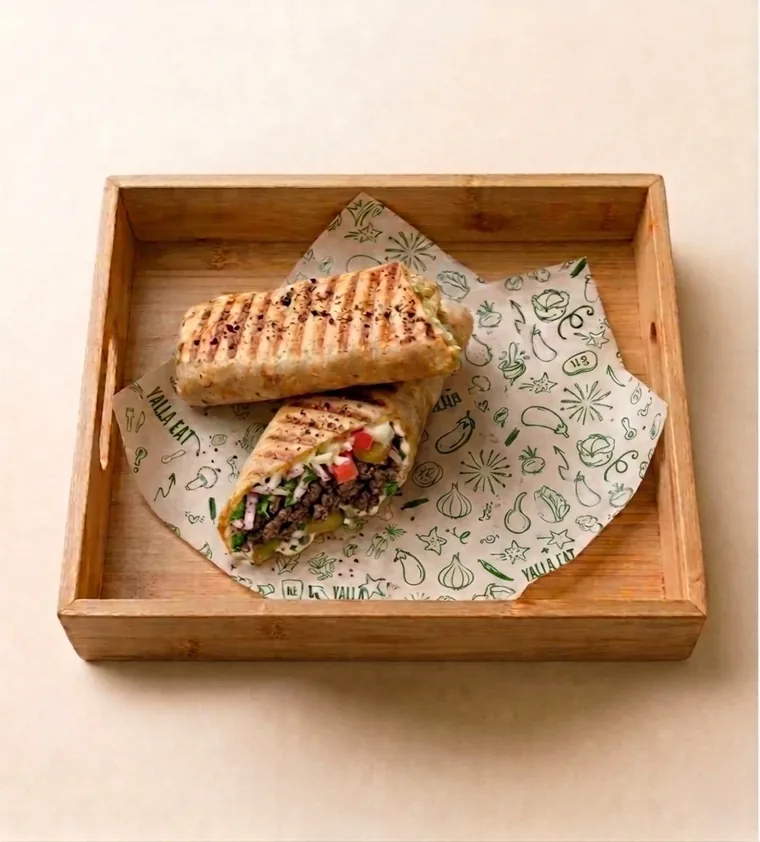

De la viande, du pain, une sauce : on confond souvent le chawarma et le kebab. Pourtant, une fois dans l'assiette, ils n'ont pas grand-chose en commun. Chez YallaEat, au 29 rue de Bourgogne à Vaise (Lyon 9), on prépare le chawarma comme au Liban : fait maison, mariné aux épices levantines, servi avec des herbes et des légumes frais. Voici ce qui les sépare, et pourquoi le chawarma libanais mérite qu'on change ses habitudes.

Une origine commune, deux chemins
Tout part de la même idée, née dans l'Empire ottoman : rôtir la viande à la verticale, devant une flamme, et la trancher au fur et à mesure. En Turquie, ce plat s'appelle le döner kebab, la « viande qui tourne ».
Au Liban et dans tout le Levant, la recette prend un autre chemin et devient le chawarma, du turc çevirme, « tourner ». Les cuisiniers libanais y ajoutent leurs épices, leurs marinades à l'ail, au citron et au yaourt, et leurs sauces : le toum, une crème d'ail, et la crème de sésame. C'est un savoir-faire ancestral de la street food libanaise, où chaque maison garde jalousement son dosage d'épices.
Le kebab tel qu'on le connaît en France vient d'ailleurs : le sandwich döner est souvent attribué aux immigrés turcs de Berlin, dans les années 1970. Il arrive ensuite en France, où il devient le « kebab-frites » des snacks, avec sauce blanche ou samouraï.
Chawarma ou kebab : le comparatif
| Critère | Chawarma libanais (YallaEat) | Kebab de snack |
|---|---|---|
| Origine | Liban et Levant | Turquie, puis Berlin pour le sandwich |
| Viande | Émincés de poulet ou de bœuf marinés | Souvent une broche industrielle de viande hachée et pressée |
| Marinade | Épices levantines, ail, citron, yaourt, huile d'olive | Assaisonnement standardisé |
| Sauces | Maison : toum (crème d'ail), crème de sésame | Sauce blanche, samouraï ou algérienne, souvent en bouteille |
| Légumes | Tomates, concombres marinés, oignons persillés, salade | Salade, tomate, oignon |
| Pain | Pain libanais fin | Pain turc épais ou galette |
| Accompagnement | En bowl avec houmous et taboulé | Frites |
Tous les kebabs ne se ressemblent pas : certains kebabistes montent encore leur broche eux-mêmes. On compare ici le kebab de snack le plus courant.
Pourquoi le chawarma libanais est plus healthy
- Des morceaux de viande, pas de la viande pressée. Les émincés marinés contiennent généralement moins de gras ajouté qu'une broche de viande hachée et reconstituée.
- Des sauces maison et légères. Le toum est fait d'ail, de citron et d'huile ; la crème de sésame, de sésame et de citron. Rien à voir avec une sauce à base de mayonnaise.
- Des herbes et des légumes partout. Persil, tomates, concombres marinés : le chawarma est frais avant d'être riche.
- Le bowl à la place des frites. Chez YallaEat, le chawarma se prend aussi en bowl, avec houmous, taboulé et légumes : un repas complet sans friture.


Healthy ne veut pas dire « régime »
Le chawarma reste de la viande grillée, et c'est tant mieux : c'est ce qui le rend si bon. Pour l'équilibre, prenez-le en bowl, avec beaucoup de légumes et une seule sauce maison.
Le chawarma chez YallaEat
Notre chawarma est fait maison : des émincés de poulet ou de bœuf marinés aux épices levantines, au yaourt et à l'huile d'olive. Il se décline dans tous nos formats.
- En sandwich, dans le pain libanais : shawarma poulet à 8,90 €, shawarma bœuf à 9,90 €. Voir les sandwichs.
- En bowl : Shawarma Poulet Bowl à 11,30 €, Shawarma Bœuf Bowl à 12,30 €. Voir les bowls.
- En salade ou en MezzéBox, pour l'avoir avec houmous, taboulé et falafels. Voir la MezzéBox.


Tout le détail de la recette est sur notre page shawarma à Lyon.
Vous cherchez un kebab à Lyon 9 ?
Si vous tapez « kebab Lyon 9 » ou « kebab Vaise », essayez le chawarma libanais : le même plaisir de manger vite et avec les mains, mais fait maison, plus frais et plus parfumé. YallaEat est au 29 rue de Bourgogne, à deux pas de la gare de Vaise.
Commander
Sur place ou à emporter, du lundi au vendredi de 11h30 à 14h30, et tous les soirs de 18h30 à 22h00. Le plus avantageux : l'appli YallaEat, avec -30 % sur votre première commande grâce au code BIENVENUE30 (dès 10 €, une fois par client, jusqu'au 31/12/2026). Aussi en livraison sur Uber Eats et Deliveroo.
Le petit lexique du chawarma
FAQ — chawarma ou kebab
Quelle est la différence entre un chawarma et un kebab ?
Ils ont une origine commune, la viande rôtie à la verticale de l'Empire ottoman. Le chawarma libanais utilise des émincés de poulet ou de bœuf marinés aux épices levantines, servis avec herbes, crudités et sauces maison comme le toum. Le kebab de snack repose souvent sur une broche industrielle de viande hachée et pressée, servie avec frites et sauces en bouteille.
Chawarma ou shawarma : comment l'écrire ?
Les deux. C'est le même plat : chawarma est l'orthographe francophone, shawarma l'orthographe anglophone. Le mot vient du turc çevirme, « tourner ».
Le chawarma est-il plus sain que le kebab ?
En général, oui : des morceaux de viande marinés plutôt que de la viande hachée pressée, des sauces à base d'ail, de citron et de sésame plutôt que de mayonnaise, et beaucoup de légumes et d'herbes. Pris en bowl, sans frites, le chawarma devient un repas complet et équilibré.
Où manger un chawarma à Lyon 9 ?
Chez YallaEat, 29 rue de Bourgogne à Vaise (Lyon 9). Le chawarma y est fait maison, en sandwich, en bowl, en salade ou en MezzéBox, sur place, à emporter ou en livraison. Toutes les viandes sont halal.
Yalla, on goûte un vrai chawarma ?
Fait maison, au 29 rue de Bourgogne à Vaise. Sahtein !